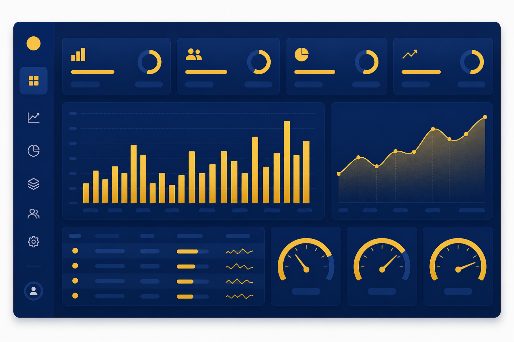
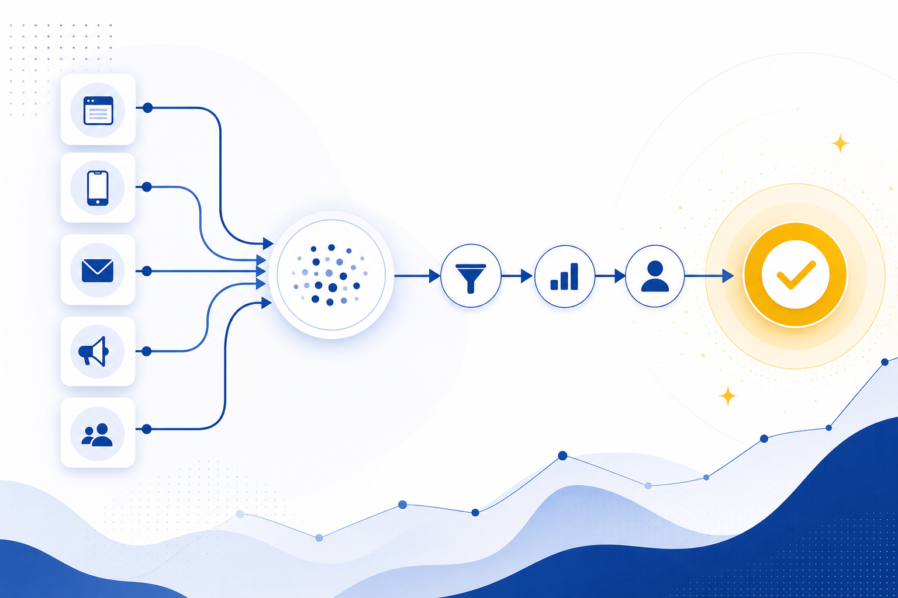

CPA高騰・面談実施率・ROAS改善・母集団形成など、人材紹介事業の現場で実際に使える集客ノウハウを発信しています。

求職者ロイヤリティを示すNPSの取り方と、面談離脱・辞退・口コミにつなげる改善サイクルを人材紹介エージェント向けに実務レベルで解説します。

SNS・広告・SEOが絡む人材紹介の求職者集客で、どのチャネルが面談・決定に貢献したかを可視化するアトリビューション分析の考え方と実装を解説します。

SaaS拡大で需要が高まるインサイドセールス職の求職者を集める訴求設計とチャネル戦略を、SDR・BDR志望のペルソナ別に解説します。

GoogleのSGE・AI Overviewsが検索行動を変える中、人材紹介エージェントが求職者流入を守るためのAIO対策とコンテンツ設計を解説します。
Google for Jobsに求人を表示させる方法を、JobPosting構造化データの実装から求人ページSEO、指名検索対策まで人材紹介向けに解説します。

Wantedlyの募集記事・ストーリー・スカウトを活用し、20〜30代の転職潜在層から人材紹介の求職者リードを集める運用手順を解説します。

転職会議・OpenWork・Googleビジネスプロフィール等の口コミが集客に与える影響と、ネガティブレビューを減らす運用体制を解説します。

2026年の中途採用市場の求人倍率・年収動向・求職者行動変化を整理し、人材紹介エージェントが取るべき集客・マッチング戦略を提示します。

転職顕在層と潜在層の違い、それぞれの集客チャネル・訴求・CPAの目安を整理し、人材紹介の中長期パイプラインを作る考え方を解説します。

LP離脱者を再獲得するリタゲ広告の設計を、配信面・オーディエンス分岐・クリエイティブ・除外設定まで人材紹介の実務目線で解説します。

タレントプールの意味と、人材紹介事業における構築・運用方法を解説。候補者DBとの違い、セグメント設計、ナーチャリング施策、再アプローチ運用まで実務ベースでまとめます。

人材紹介事業でアフィリエイト・成果報酬型メディアを活用する方法を解説。主要ASP・単価相場・提携先の選定基準・CPA管理まで、実務ベースで比較します。

20代求職者を集めたい人材紹介エージェント向けに、価値観・情報収集行動の特徴と、SNS・広告・オウンドメディアを組み合わせた集客チャネル設計を解説します。

金融業界に特化した人材紹介の集客戦略を解説。銀行・証券・保険・フィンテックの求職者属性、規制環境、効果的なチャネルと訴求設計を実務ベースでまとめます。

人材紹介エージェント向けに、求人票・募集要項の書き方を解説。タイトル・仕事内容・条件欄の設計、NGワード、応募率を上げる訴求パターンまで実務ベースでまとめます。

人材紹介事業における反社会的勢力チェックの実務を解説。求職者・求人企業それぞれの確認方法、データベース活用、契約書条項、運用フローまで実務担当者向けにまとめます。

人材紹介事業者向けに、転職ウェビナー・キャリアセミナーを活用した求職者集客の設計手法を解説。テーマ選定・集客動線・面談誘導までのフローと成功事例をまとめます。
建設業界に特化した人材紹介の求職者集客を解説。施工管理・職人・現場監督など職種別の訴求設計、効果的なチャネル、地方別の獲得単価相場までを実務目線でまとめます。

人材紹介事業者向けにMeta広告（Facebook／Instagram広告）の運用設計を解説。ターゲティング・クリエイティブ・LP設計・CAPI連携まで、CPAを下げる実務ノウハウをまとめます。

人材紹介の求職者集客を内製化するか外部委託するかを、CPA・初期投資・運用工数・スピードの4軸で比較。判断フレームと外注先選定のチェックリストを解説します。

スカウトメールの開封率・返信率・面談化率を上げる件名と本文の型を解説。媒体別の最適文字数とパーソナライズの実務、ABテスト運用まで網羅。

人材紹介業界の市場規模・事業者数・倒産動向・成長セグメントを2026年最新データで整理。中小エージェントが取るべきポジショニング戦略を提示。

製造業の人材紹介で求職者を集めるためのチャネル選定・訴求軸・地方拠点との連携を解説。技術職と現場職それぞれのペルソナと相性の良い媒体も整理。

求職者の登録〜内定までの7接点を可視化し、CX改善で離脱率・口コミ・再利用率を高める実務を解説。NPS計測とレビュー獲得の設計も網羅。

ダイレクトリクルーティングと人材紹介の違いを、費用構造・成果速度・運用負荷の3軸で比較。エージェントが取るべき差別化戦略と送客サービスの活用法も解説。

50代以上のシニア求職者を集めるための訴求軸とチャネル設計を解説。再雇用・顧問・専門職などキャリア類型別のアプローチと、紹介会社が押さえるべきマッチング設計をまとめます。

人材紹介事業の意思決定を加速するKPIダッシュボード設計を解説。応募〜決定までの15指標、BIツール選定、週次オペレーションへの落とし込みまで実務的にまとめます。

求人広告と人材紹介の違いを費用・スピード・マッチ精度の3軸で比較。企業の採用フェーズ別の使い分けと、紹介会社が顧客提案で押さえるべきポイントを解説します。

求職者のリード獲得から面談着座までを自動化するMA活用法を解説。シナリオ設計・スコアリング・主要MAツールの選定基準まで人材紹介の現場視点で整理します。

2024年問題で需要が急増する物流業界向け人材紹介の集客戦略を解説。ドライバー・倉庫管理・物流企画など職種別の訴求設計と主要チャネルの選び方を実務目線でまとめます。

ITP・Cookie規制で人材紹介の広告計測がどう変わるかを解説。サーバーサイドGTM、コンバージョンAPI、ファーストパーティデータ活用など計測精度を保つ実務対応をまとめます。

人材紹介事業者がリファラル（紹介）経由で求職者を獲得する仕組みを解説。紹介インセンティブ設計、依頼タイミング、決定者起点のループ構築までを実務視点でまとめます。

IT業界に特化した人材紹介事業者向けの求職者集客戦略を解説。エンジニア・PM・SRE等の職種別チャネル、技術コミュニティ活用、年収訴求の設計を実務目線でまとめます。

人材紹介の内定承諾率を高めるためのオファー設計、年収交渉、競合エージェント対策、辞退理由の分析手法を解説。決定数を増やすための面談以降の運用改善を実務視点でまとめます。

人材紹介事業者がYouTubeで求職者を集客する方法を解説。チャンネル設計、動画企画、SEO、面談誘導までの導線設計と、TikTok・Instagramとの使い分けを実務目線でまとめます。

人材紹介の集客チャネル選定と訴求設計の起点となる求職者ペルソナの作り方。インタビュー設計・属性整理・訴求への落とし込みまで5ステップで解説。

医療・介護領域の人材紹介で求職者を集める実務ガイド。看護師・介護士のチャネル選定、訴求設計、規制・倫理面の注意点、CPA相場まで解説します。

人材紹介の候補者DBに眠る休眠求職者を掘り起こし、追加コストゼロで面談着座を生む再アプローチの設計。セグメント・配信内容・頻度・KPIまで解説。

人材紹介エージェントが求職者集客で使える主要求人媒体7種を比較。掲載料金・集まる層・CPAの目安・自社集客との併用設計まで実務目線で解説します。

人材紹介事業でChatGPTや生成AIを活用する具体的な方法を解説。求人原稿作成、スカウト文、LINE自動応答、カウンセリング補助、データ分析まで現場で使える7パターンを紹介します。

40代以上のミドル・管理職層を対象にした人材紹介の集客手法を解説。チャネル選定、ペルソナ別の訴求軸、ハイクラス求人との接続、面談着座までの導線設計をまとめます。

人材紹介の手数料（成功報酬）の業界標準、決定単価の決まり方、返金規定の設計、料金体系の差別化、企業との交渉実務までを実務レベルで解説。事業の収益性を直接決定する手数料設計の判断ガイド。

外国人材紹介の求職者集客戦略を、市場特性・在留資格別の集客設計・多言語訴求のポイント・主要チャネルと相場の観点から整理。技能実習・特定技能・高度人材・留学生まで、セグメント別の実務ガイド。

ハイクラス領域（年収600万円以上）の求職者集客戦略を、市場特性・主要媒体（Bizreach等）・スカウト型運用・SNS活用・ハイクラス向け訴求設計の観点から解説。決定単価300万円超の世界で勝つための実務ガイド。

面談キャンセル率の業界平均と典型的な原因パターン、運用改善のレバーを実務レベルで解説。前日リマインドからキャンセルポリシー設計、当日無断欠席への対応まで、着座率を構造的に引き上げる運用設計をまとめます。

求職者送客サービス主要6社（求職者送客の窓口・L reach・ミチフル・求職者送客ナビ・転職会議clubhouse・キミナラ）の面談単価・着座率・スクリーニング方式を徹底比較。人材紹介事業者向けに決定単価×ターゲット属性で選ぶ完全ガイド。保

月次の決定数目標から逆算して、必要面談数・必要応募数・必要広告予算を算出する実務フレーム。事業計画の精度を上げるためのKPI設計と歩留まり率の前提整理、シナリオ別の感度分析までを網羅した経営者向けガイド。

人材紹介業向けの応募者管理システム（ATS/CRM）の選定軸と主要製品の比較。ハーモス、ジョブカン、SmartHR、HRMOS、Mochicaなどの特徴を、機能・料金・運用面で実務レベルで整理。事業規模・成長フェーズ別の最適な選定ガイド。

キャリアアドバイザー（CA）の生産性を上げるためのオペレーション設計、ツール選定、面談前準備の最適化、求人マッチングの効率化までを実務レベルで解説。CA1人あたり月間決定数を倍増させるための運用フレームを整理した実務ガイドです。

応募者と面談の間に挟む事前カウンセリングを、目的・実施フロー・必須ヒアリング項目・期待値調整のテクニックまで実務レベルで解説。面談着座率を40%台から80%台に引き上げる運用フレームを、CAの教育マニュアルとしても使える形で整理します。

人材紹介事業者がIndeedやスタンバイなど求人検索エンジンを活用して求職者を集める方法を解説。掲載要件・原稿作成・CPC運用・他チャネルとの組み合わせまで実務目線でまとめます。

人材紹介の紹介手数料の相場、理論年収比率の決め方、返金規定、着座成果報酬など派生モデルとの違いを整理。経営者が報酬体系を設計する際の判断軸を解説します。

人材紹介事業者が押さえるべき個人情報保護法のポイントを解説。求職者DBの管理、利用目的の同意取得、第三者提供、漏洩時対応まで、集客・送客フローに沿って整理します。

人材紹介事業の有料職業紹介免許の取得要件、申請フロー、維持要件、実務で気をつけるべきコンプライアンスを解説。

LINE公式アカウントを活用した人材紹介業の集客・育成・面談誘導設計を、LSTEP等のステップ配信ツールも含めて実務レベルで解説。応募〜面談着座の歩留まりを大きく改善するLINE運用フレームを、リッチメニュー設計から自動配信シナリオまで具体

人材紹介業の広告クリエイティブ（バナー・動画）制作実務を、ターゲット別の訴求設計・強い訴求コピーの作り方・画像構成の原則・ABテストの設計の観点で解説。CTR・CPAを大きく動かすクリエイティブの作り方を、現場で使える具体的なフレームで整理

人材紹介業のWebマーケティングにおけるコンバージョン計測を、GTM設定・GA4のカスタムイベント・Google広告のコンバージョンAPI連携・オフラインCV取り込みまで体系的に解説。決定単価ベースの広告最適化を可能にする計測基盤の作り方を

九州・福岡エリアの人材紹介事業向け集客戦略を、市場の急成長性・首都圏移住組の取り込み・主要チャネル・地域特化訴求の観点から整理。IT・スタートアップ集積地として急成長する福岡市場での集客モデル構築の実務ガイド。

関西・大阪エリア（大阪・京都・兵庫・奈良）の人材紹介事業向け集客戦略を、市場特性・首都圏との求職者属性の違い・主要媒体・地域特化の訴求設計の観点で整理。商業・サービス業を軸とした関西経済圏での集客モデル構築ガイド。

愛知・名古屋を中心とした東海エリア（愛知・岐阜・三重・静岡）の人材紹介事業向け集客戦略を、地域特性・主要産業・媒体選定・首都圏との違いの観点で整理。製造業中心の経済構造を踏まえた地域特化型エージェントの実務ガイド。

30代求職者に特化した人材紹介の集客戦略を、市場特性・キャリアアップとキャリアチェンジの分岐・ファミリー要素の訴求設計・主要チャネル・相場の観点から体系的に解説。20代と40代の中間層特有の意思決定プロセスを踏まえた実務ガイドです。

U・Iターン転職市場における求職者集客戦略を、市場の特性・都市部から地方への動機設計・主要チャネル・歩留まり管理の観点で実務レベルで解説。地方特化型エージェントの差別化や、首都圏エージェントが地方求人を扱う際の集客モデルを整理します。
求職者集客の全体像を、主要10チャネル（リスティング・SNS・媒体・送客サービス・SEO・LINE・リファラル等）の比較、CPA相場、歩留まり管理、セグメント別の戦略まで網羅的に解説。人材紹介事業の経営者・マーケ責任者向けの決定版ガイドとし

女性求職者（特に20〜30代）に特化した人材紹介の集客戦略を、市場特性・ライフイベント配慮の訴求設計・キャリア不安解消の訴求・主要チャネル・LP設計の観点から整理。男女兼用LPでは取れない優良母集団形成のための実務ガイド。

年収訴求の頭打ち時代に、住宅手当・福利厚生・働き方を集客の主訴求軸として設計する実務ガイド。Z世代・第二新卒のホワイト企業志向と価値観の変化に合わせた訴求パターン、競合との差別化、応募率・面談着座率への影響まで解説します。

SaaS営業（インサイドセールス・フィールドセールス・カスタマーサクセス）に特化した求職者集客の実務ガイド。市場の特殊性、キャリアアップ訴求の設計、未経験から経験者への分岐、高単価決定を狙うチャネル設計までを、SaaS企業の急成長を背景にし

成長領域として注目されるカスタマーサクセス（CS）職の人材紹介における求職者集客戦略を、市場の成長性・求職者属性・営業職経験者からの転換訴求・主要チャネル・相場の観点から体系的に解説。CS特化型エージェントの差別化設計のための実務ガイド。

未経験エンジニア領域の求職者集客戦略を、市場特性・主要チャネル・ITスクールとの提携設計・訴求設計・歩留まり改善の観点から体系的に整理。エンジニア専業エージェントの立ち上げや、未経験エンジニア領域への参入を検討する事業者向けの実務ガイドです
人材紹介業のランディングページ（LP）のCVR（応募率）を改善する実務ガイド。ファーストビューの設計原則、訴求の優先順位、フォーム最適化、離脱ポイントの特定と対策まで、CVRを1.5〜2倍に引き上げるための施策を体系的に解説します。

Instagramを使った人材紹介業の求職者集客を、リール動画・フィード投稿・ストーリーズの3機能ごとの役割と運用設計の観点で実務レベルで解説。20〜30代女性をはじめとした優良母集団形成のためのチャネル戦略ガイド。

人材紹介事業の収益構造・平均単価・主要コスト・経営KPIを体系的に整理。新規参入を検討する経営者や、自社の事業計画の精度を上げたいマーケ責任者向けに、業界の標準的な経済性を実数値レンジ付きで解説します。

人材紹介業のTikTok集客を実務レベルで体系化。アルゴリズムの基本理解、人材紹介で伸びるコンテンツパターン、投稿頻度と運用体制、分析指標と改善サイクル、失敗パターンと回避策まで、20代求職者を低CPAで集める実践ガイド。

人材紹介業がオウンドメディアでSEO経由の求職者集客を実現するための実践ガイド。キーワード設計・記事構成テンプレート・運用体制・成果が出るまでの期間・投資判断の基準までを、累積で勝つチャネルの作り方として体系的に解説します。

2026年時点の新卒紹介事業を取り巻く変化を、Z世代の情報収集行動・就活サイト離れ・SNS就活・スカウト型の伸長の観点から総合的に整理。母集団形成戦略を再設計するためのインサイトを、新卒紹介事業の経営者・マーケ責任者向けに解説します。

応募→面談→決定までの歩留まりを構造化するファネル設計の考え方を、各段階の業界平均値・ボトルネック診断・改善施策・事業フェーズ別の優先順位までセットで解説。CPAだけ追っても見えない歩留まりの最適化を、人材紹介事業の経営者・マーケ責任者向け

人材紹介業のCPAを正しく計算・評価するための3階層フレームワーク（応募CPA・面談着座CPA・決定CPA）と業界平均値を解説。応募CPAだけ追ってROAS悪化を見逃す典型パターンとその防ぎ方を、若手未経験・第二新卒・専門職領域のレンジ感つ

人材紹介業のCPAが年々上がり続けている背景と、現場で打てる具体的な6つの対策を、媒体構造・歩留まり・チャネル選定の観点から整理します。

人材紹介業の面談着座率（実施率）が低い原因と、現場で実際に効いた7つの改善施策を解説。応募から面談までの歩留まり改善はROASを大きく押し上げる、最も費用対効果の高い領域です。

人材紹介業の求職者集客を外部に委託する場合のサービス類型を7タイプに分類し、料金体系・契約形態・専門性・成果のリスクを比較。自社のフェーズと課題に応じた選び方の判断軸も解説します。

20代求職者の情報収集経路の主軸となったSNS集客を、人材紹介業向けに体系的に解説。TikTok・Instagram・Xそれぞれの特性、運用設計、成果が出るまでの期間、失敗パターンまで実務レベルで整理します。

第二新卒層（社会人経験1〜3年）に特化した求職者集客の戦略を、5つの主要チャネルと訴求設計の観点から解説。各チャネルの特性、CPA相場、第二新卒特有の心理・行動を踏まえた実践ガイド。

人材紹介業のROAS（広告費用対効果）を改善するための計算式の整理と、現場ですぐ実装できる10の具体的な打ち手を解説。決定CPAを起点とした逆算思考、チャネル別評価、歩留まり改善まで実務ガイド。

新卒紹介事業における母集団形成の2026年最新トレンドを、SNS集客・スカウト型・送客サービスの3チャネルから整理。Z世代の情報収集行動と、各チャネルの単価・リードタイム・決定率の比較も含めた実務ガイド。

人材紹介業がリスティング広告（Google・Yahoo!）で求職者を獲得するための実務ガイド。キーワード選定、入札戦略、LP設計、CPA相場、よくある失敗パターンまで、運用開始時から最適化フェーズまでを網羅的に解説。

着座成果報酬型の求職者送客サービスについて、その仕組み・課金タイミング・相場感を、応募課金型・成功報酬型などの他モデルとの比較で詳しく解説。人材紹介事業者が選定する際の判断軸と注意点まで。

未経験層に特化した人材紹介エージェントの求職者集客戦略を、市場特性・主要チャネル・訴求設計・歩留まりの観点から完全網羅。営業未経験・施工管理未経験・SaaS営業未経験など、典型セグメント別の実務ガイド。